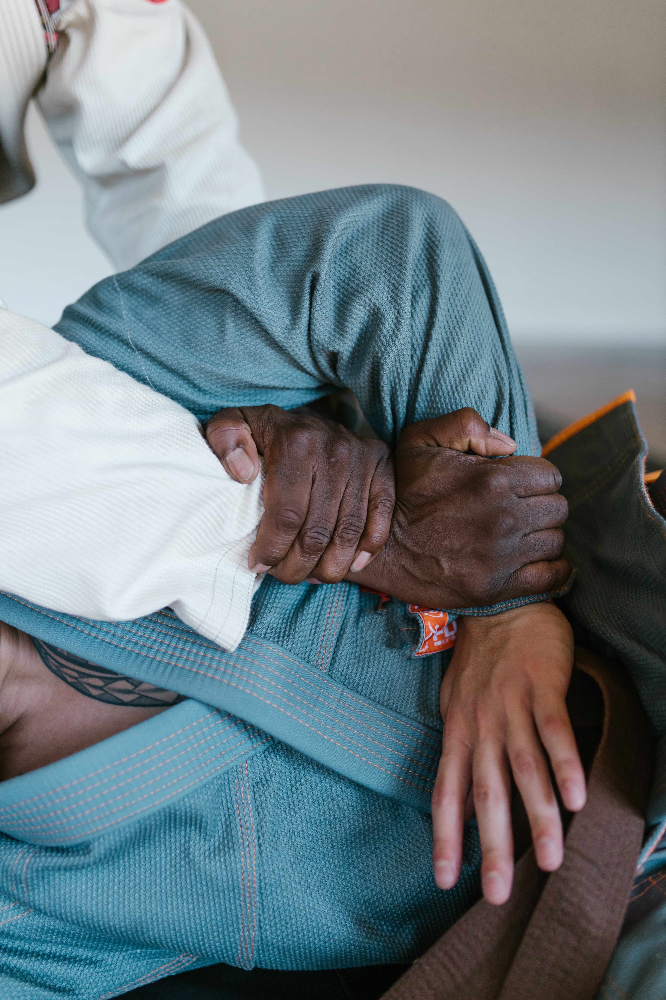
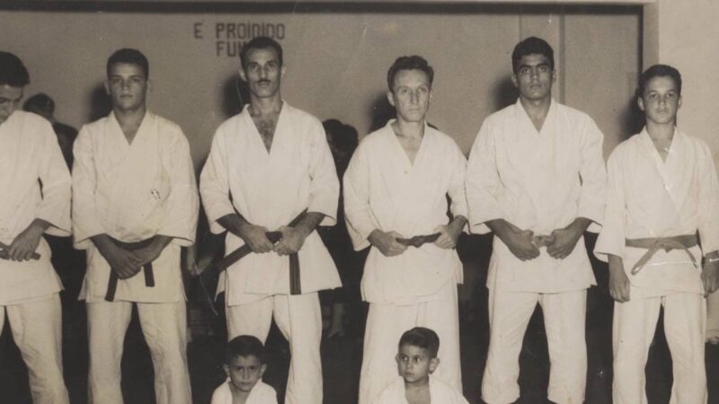

<!DOCTYPE html>
<html lang="en">
<head>
    <meta charset="UTF-8">
    <meta http-equiv="X-UA-Compatible" content="IE=edge">
    <meta name="viewport" content="width=device-width, initial-scale=1.0">
    <title>Document</title>
    <link rel="preconnect" href="https://fonts.googleapis.com">
    <link rel="preconnect" href="https://fonts.gstatic.com" crossorigin>
    <link href="https://fonts.googleapis.com/css2?family=Open+Sans:ital,wght@0,400;0,700;1,400;1,700&display=swap" rel="stylesheet">
    
        <link href="css/styles.css" rel="stylesheet">
    </head>
    <body>
            <header role="banner">
                    <nav role="navigation">
       
                        <!-- Delusionally making these class names but they make sense in my head after a 48hr all nighter throughout the week :') -->
                </body>
                </html>
                <div id="skip-links">
                    <ul>
                        <li><a href="index.html">Home</a></li>
                        <li><a href="page2.html">Information</a></li>
                        <li><a href="page3.html">Contact Us</a></li>
                    </ul>
                </nav>
</div>
                <div class = "header-saudade">
                    <div class ="container">
                <h1>SAUDADE</h1>
                <br>
                <br>
                <!-- <div class="header-welcome">
                    <div class="container"> -->
               
        </div>
        <br>
        <br>
            <br>
            <div class="front-header">
            <p>Saudade is a platform designed to have the information you struggle to find about Brazilian Jiu-jitsu</p>
        </div>
            <br>

    </div>
        </header>

        <main role="main" main id="main-content">
            <div class = "container">
                <section class = "section-whatwhy">
                    <div class="whatwhyleft">
                        <div class="background-image-kimura">
                        
                        <br>
      <br>
             <div class="definition">
           <h4 style="color: #333; background-color: #eee;">Saudade [ soh-dahd; Portuguese soh-dah-juh ]</h4></div>
           <p style="color: #333; background-color: #eee;">
            <div class="written-definition" style="color: #333; background-color: #eee;">
                (in Portuguese folk culture) a deep emotional state of melancholic longing for a person or thing that is absent:
                the theme of saudade in literature and music.
            <br>
            <a id="dictionary" href="https://www.dictionary.com/browse/saudade#:~:text=Saudade%20is%20a%20word%20for,a%20kind%20of%20melancholy%20yearning.">Dictionary.com</a>
            </p></div>
            <h2 style="color: #333; background-color: #eee;">What & Why?</h2>
 </div>
 
            <h3 style="color: #333; background-color: #eee;">What is BJJ?</h3>
            <p style="color: #333; background-color: #eee;">Brazilian Jiu-jitsu also known as the gentle art, is a relatively new martial art, created by the Gracie Family. BJJ was inspired by Japanese Jiu-jitsu, but was re-invented with elements of wrestling and judo. The movements of striking were removed, and it became an martial art exclusive to solely grappling. The Gracie family's vision was to make a martial art that would be accessible to the smaller and weaker. It was created to manipulate gravity to your favour. This is now a sport and martial art, that requires you to rely immensely in technique </p>
            <br>
            <h3 style="color: #333; background-color: #eee;">Why Saudade?</h3>
            <p style="color: #333; background-color: #eee;" >The BJJ community is growing at a remarkable rate. However it is still small. This makes finding resources and information more tedious and difficult. At SAUDADE, we've facilitated a tradition oriented Brazilian Jiu-jitsu venture on the web.</p>
        </div>
    </div>
</section>
<div class="background-image-gracie">
    
    </main>
    <br>
    <footer role="contentinfo" style="color: #333; background-color: #eee;">
        <div class = "container">
            <div class="footer-stuff">
        <p>&copy;Copyright SAUDADE,2023
            <br>
        All images are taken from
        <a id="pex" href="https://www.pexels.com/">Pexels</a></p>
    </div>
    </footer>
        </body>
    </html> 